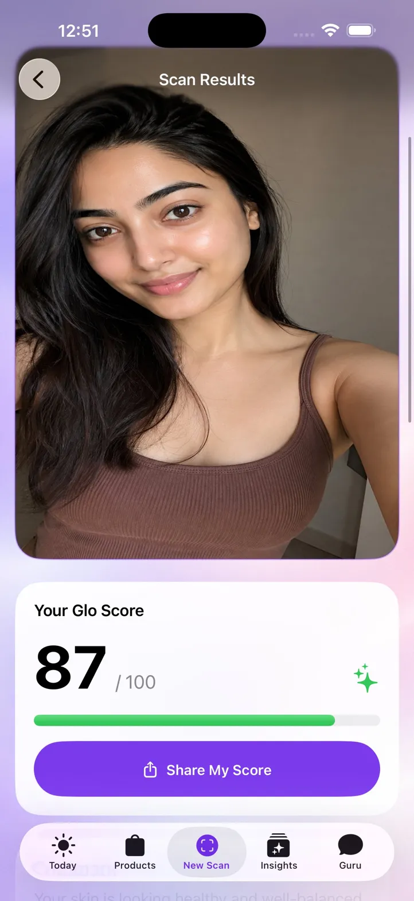
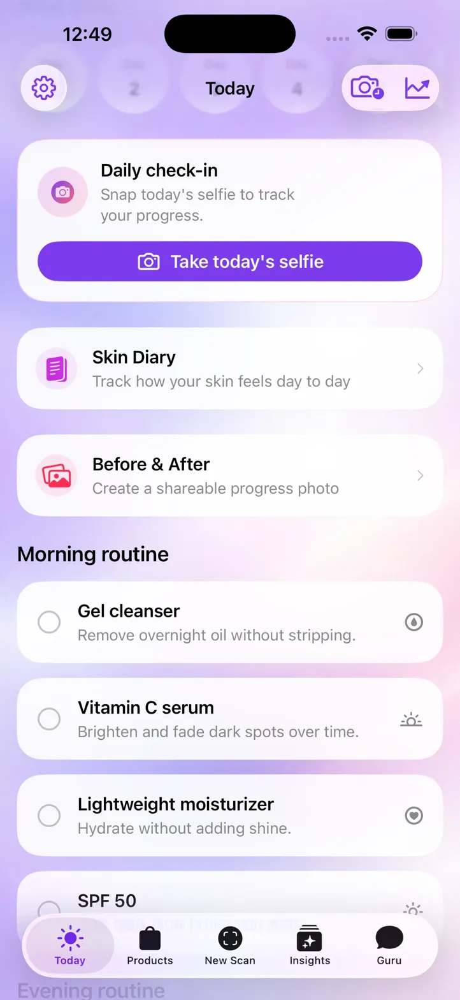
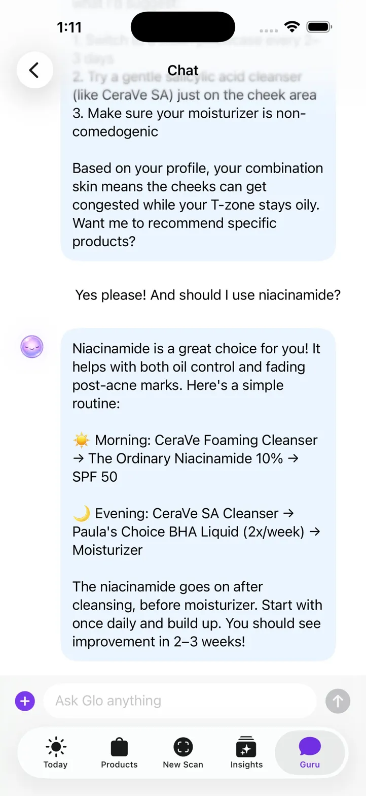

Know your skin.
Love your skin.
GloSkin scans your face in 60 seconds, gives you a personalized Glo Score, and pairs you with a tiny AI guru who actually remembers what your skin needs.
Be the first to know when we launch. No spam — just a single welcome from Glo.

A full skincare consultation, in minutes.
A 60-second face scan reads your skin type and analyzes every zone — forehead, cheeks, T-zone, jaw — then builds a personalized Glo Score and a custom care plan tailored to what your skin actually needs.
- Hydration, tone, texture, and redness measured per zone
- Personalized Glo Score from 0 to 100, updated every scan
- A custom routine built from your results — not a template
Your AI skincare guru, on call 24/7.
Ask Glo anything — product swaps, ingredient conflicts, the breakout that won't quit. She holds your skin profile in memory and updates it as your skin changes, so the answers always fit where you are in your routine.
- Grounded in current dermatology research
- Tracks your routine, allergens, and goals over time
- Clear, professional answers — no medical-chart jargon
See your progress, week by week.
A 5-second selfie check-in updates your skin profile and keeps Glo in the loop. She catches changes early, suggests adjustments before issues take hold, and keeps you honest with the routine you committed to.
- Trend lines per zone, so you see what's actually working
- Side-by-side before / after captured automatically
- Product suggestions tuned to how your skin is responding
Routines that actually fit your life.
A quick morning checklist tailored to you. Smart reminders that work around your schedule. Product recommendations matched to your skin, your goals, and your budget — not whatever's trending.
- Focused AM and PM routines, never overloaded
- Reminders that flex around your day
- Recommendations chosen for ingredients that work
Glow up. The smart way.
Be one of the first to meet Glo. Join the waitlist for early access, an invite to our private launch, and a free month of GloSkin Plus when we go live.


